사이트 상단 탭으로
LMS를 이해하는 메뉴얼
학회원이 쓰는 bdai.co.kr 메뉴를 기준으로, 각 탭이 무엇을 위한 화면인지, 운영진이 어드민에서 무엇을 관리하는지를 같이 봅니다.
1. 시작·접속
LMS에는 학회원 화면(bdai.co.kr)과 운영 어드민(/admin/)이 있습니다.
운영진은 학회원 화면으로 “무엇이 보이는지”를 이해하고,
어드민에서 그 상태를 반영·승인합니다.
| 공간 | 용도 | 경로 |
|---|---|---|
| 학회원 사이트 | 수업·공지·knock 등 이용 | bdai.co.kr |
| 강사 포털 | 담당 분반 지도 | /instructor/ |
| 운영 어드민 | 승인·출결·점수·공지 관리 | /admin/ |
어드민 접속
- 공용 운영 계정으로 로그인
/admin/이동- Slack 6자리 인증 입력
2. 사이트 탭 지도
로그인 후 상단에 보이는 메뉴가 이 문서의 목차입니다.
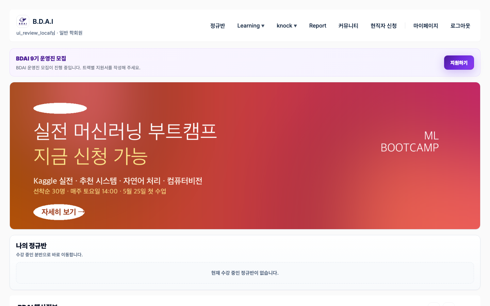
3. B.D.A.I
취업·학교 생활 정보를 LMS 안에서 보게 하는 영역입니다. 기업분석은 기업·직무 리포트와 커피챗 관심 신청, 캠퍼스맵은 학교별 맛집·카페·제휴 매장입니다.
| 하위 | 학회원 | 운영진 (어드민) |
|---|---|---|
| AI 기업분석 | 기업 리포트 열람, 커피챗 관심 신청 | 기업분석 허브 · 커피챗 신청 목록 처리 |
| AI 캠퍼스맵 | 학교별 장소·리뷰 확인 | 캠퍼스맵 운영 · 제휴 매장 등록 |
운영 시 기억할 점
- 일상 정규반 운영과 별도 담당이 있는 경우가 많습니다.
- 커피챗 “관심 신청”은 knock 공개 일정과 DB가 다를 수 있습니다.
4. 정규반
기수·분반 수업의 홈입니다. 수강 배정이 된 회원만 분반 카드·Zoom·과제·출결·점수를 봅니다. 운영진 주간 업무의 중심입니다.
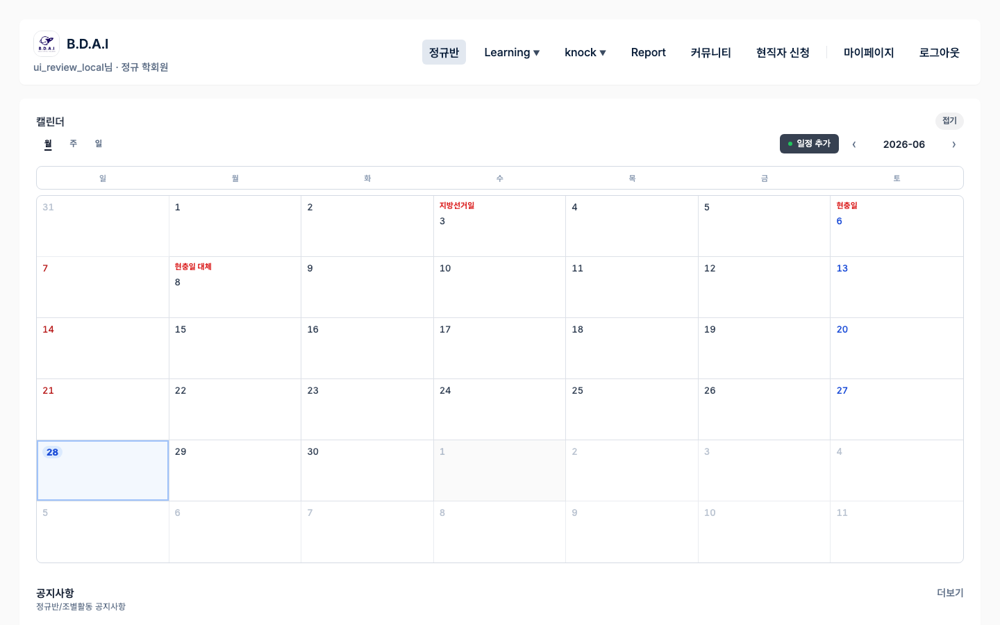
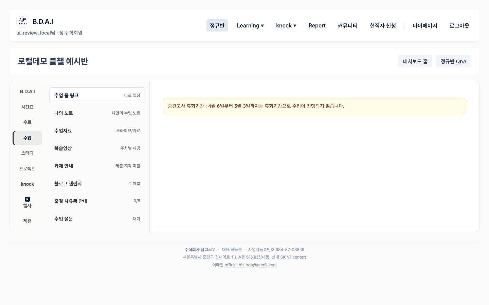
학회원에게 보이는 것
- 분반명, 수업 시간, Zoom 링크
- 주차별 과제 제출·출석 상태
- 상점/벌점 총점, 출결 사유폼
- 조별활동 · 블로그 챌린지 (시즌)
운영진이 어드민에서 관리하는 것
| 업무 | 어드민 위치 | 결과 |
|---|---|---|
| 회원 승인·유형 | 회원·권한 | 포털 이용 가능 여부 |
| 수강 배정 (Enrollment) | 일상 운영 / 정규반 → CSV | 정규반 홈에 분반 노출 |
| 출석 반영 | 일상 운영 → 출석 CSV / 분반 Zoom | 출결 탭 갱신 |
| 사유폼 검토 | 정규반 → 출결 사유 | 결석·지각 등 정리 (벌점은 시간차 가능) |
| 상벌점 | 일상 운영 → 상벌점 CSV | 총점·수료 기준 반영 |
| 과제 | 정규반 → 과제·제출 | 제출률·미제출 안내 |
| 조별활동 / 블로그 | 정규반 (시즌) | 팀·스탬프·관련 점수 |
출석 = 참여 기록 · 상벌점 = 수료용 총점 · B포인트 = 별도 보상 재화(일상 운영에서 지급)
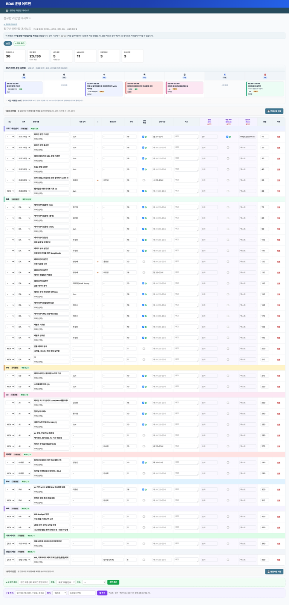
5. Learning
정규반 외 학습 콘텐츠·프로그램 진입점입니다.
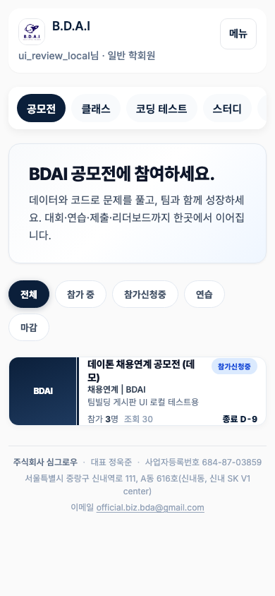
| 하위 | 학회원 | 운영진 |
|---|---|---|
| 클래스 | 강의 수강 | 강의 심사 · VOD 입금 승인 |
| 공모전 | 공모전 참여·제출 | 제출·평가 시트 |
| 코딩 테스트 / 자격증 / 수료시험 | 응시·학습 | 문제·시험 출제·기록 |
| 정부교육 | 관련 콘텐츠 | knock 연동 탭으로 관리되는 경우 있음 |
어드민
- 왼쪽 탭 Learning · 심사/입금 대기는 일상 운영에도 모여 있음
- 담당 없는 승인 큐는 임의 처리하지 않음
6. knock
커리어·네트워킹·채용·대외활동 허브입니다. 정규반 수업과는 별 축입니다.
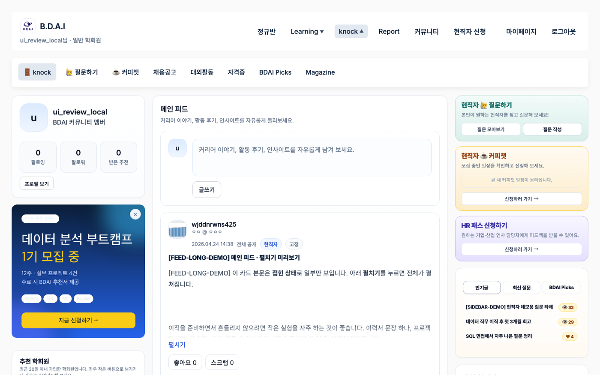
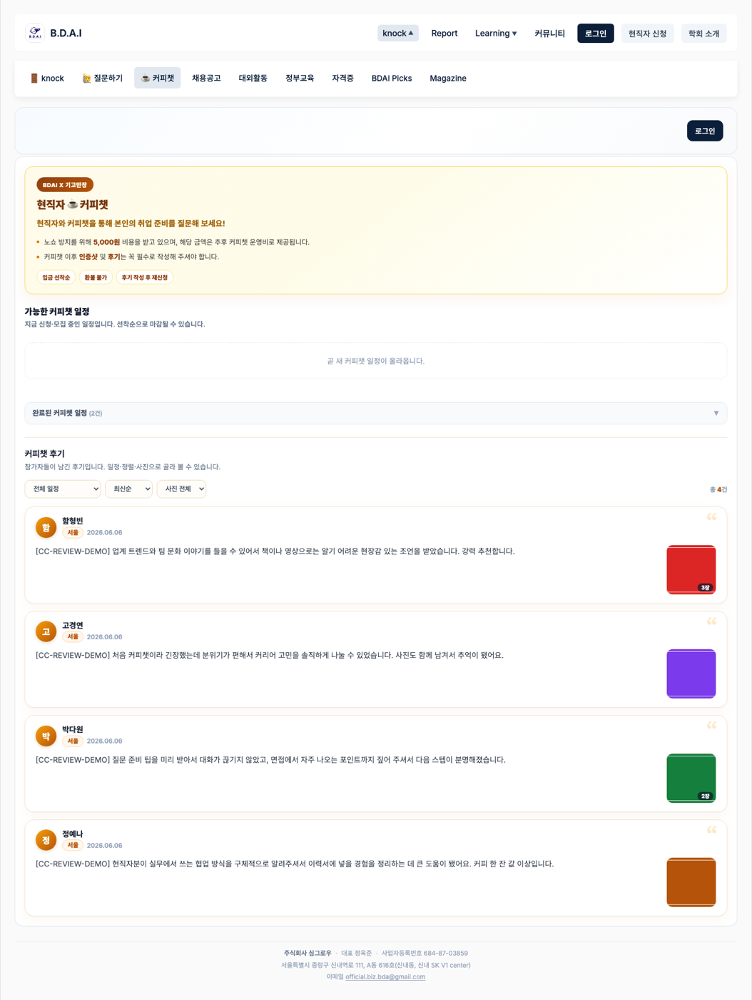
| 하위 | 하는 일 |
|---|---|
| knock | 피드·콘텐츠 |
| 질문하기 | 현직자 질문 / HR 패스 등과 연결 |
| 커피챗 | 현직자 커피챗 일정·신청 |
| 채용 게시판 | 채용공고 |
| 대외활동 | 대외활동 정보 |
| BDAI Picks | 제휴·추천 카드 |
어드민
- 왼쪽 탭 Knock (피드·HR패스·커피챗·채용·대외활동·Picks)
- 신규 운영진 필수 범위는 아님. 담당 배정 후 진입
7. Report
리포트 콘텐츠를 모아 보는 메뉴입니다. 공지 카테고리·Report 허브와 연결됩니다.
어드민
- 왼쪽 탭 Report 또는 공지 카테고리(Gen Z / Trend Z)
8. 커뮤니티
QnA 게시판과 공지·행사를 담는 탭입니다. 사이트에서는 커뮤니티로 묶여 있고, 운영은 공지 작성과 행사 신청 처리가 핵심입니다.
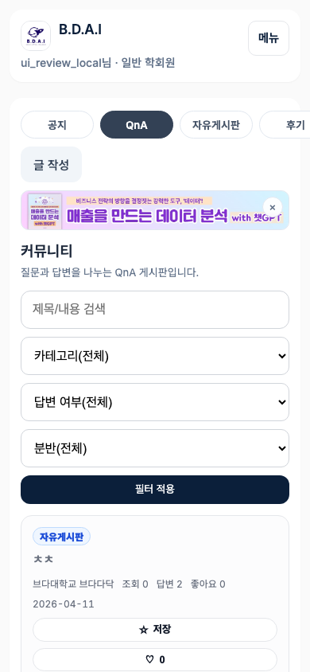
공지·행사 운영 흐름
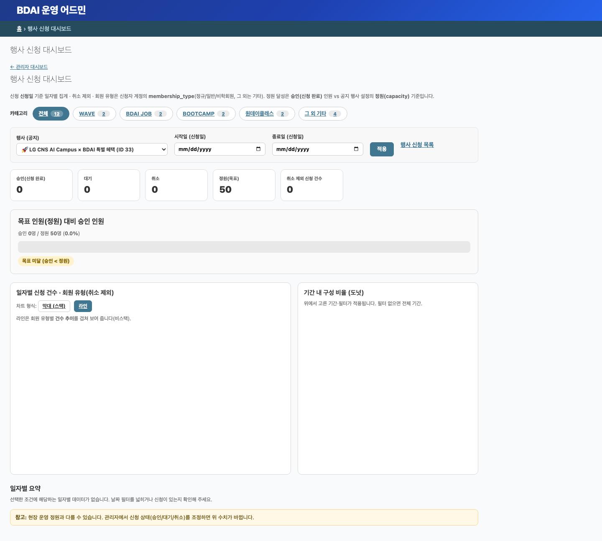
어드민
- 왼쪽 탭 커뮤니티 — 공지, 행사 신청
- 현황 — 대시보드·지표 → 행사 신청
9. 마이페이지
계정·프로필, 즐겨찾기, 분반별 블로그 스탬프 등을 확인하는 개인 공간입니다.
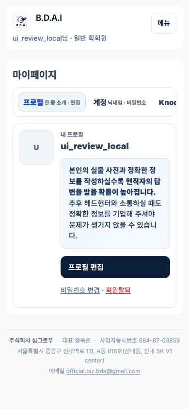
운영과 연결되는 부분
- 블로그 스탬프 — 정규반 탭에서 제출 승인 시 반영
- 회원 정보·유형 — 어드민 회원·권한에서 관리
10. 운영 어드민 (관리 콘솔)
사이트 탭에 보이는 상태를 만들고 고치는 관리 화면입니다. 왼쪽 허브 탭이 업무 구역입니다.
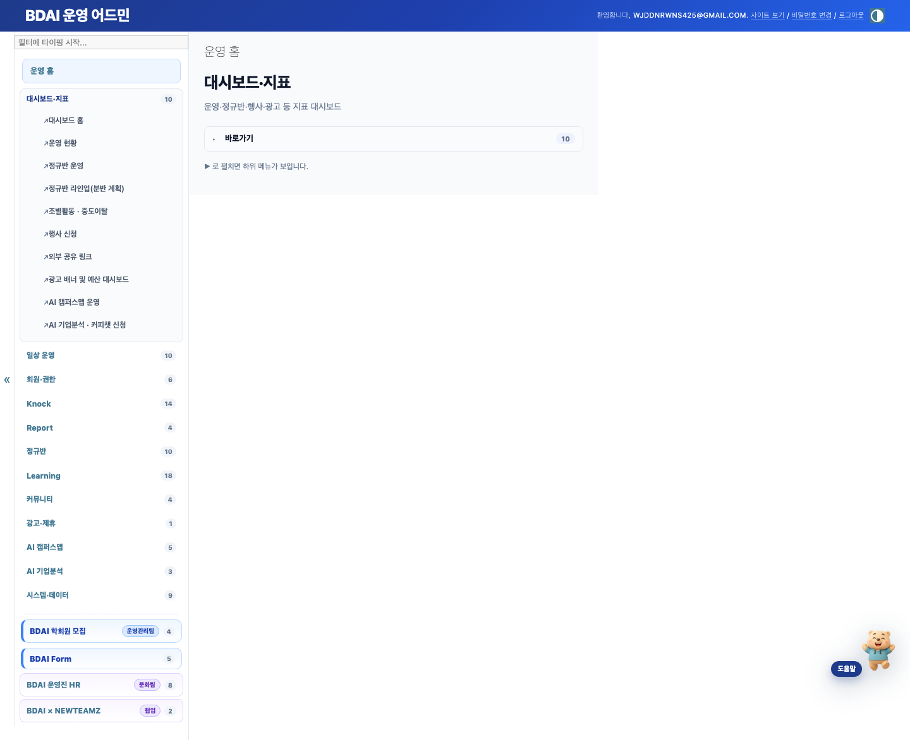
사이트 탭 ↔ 어드민 매핑
| 사이트 탭 | 주로 쓰는 어드민 |
|---|---|
| 정규반 | 정규반 · 일상 운영 (CSV) · 대시보드 |
| 커뮤니티 | 커뮤니티 · 행사 신청 대시보드 |
| Learning | Learning · 일상 운영 (심사·입금) |
| knock | Knock |
| B.D.A.I | AI 기업분석 · AI 캠퍼스맵 |
| Report | Report / 공지 카테고리 |
| (모집 시즌) | BDAI 학회원 모집 · BDAI Form |
일상 운영 탭에서 자주 쓰는 것
- 출석 CSV · 상벌점 CSV · 정규반(수강) CSV
- B포인트 지급
- 강의·WAVE 심사, VOD 입금, 첨삭 승인 대기열
11. 주간 운영 (정규반 기준)
사이트 「정규반」과 어드민 「정규반·일상 운영·대시보드」를 같이 쓰는 루틴입니다.
| 때 | 할 일 | 사이트 / 어드민 |
|---|---|---|
| 수업 전 | Zoom·자료·과제 노출 확인 | 사이트 정규반 · 어드민 분반 |
| 수업 직후 | 출석 반영 | 어드민 일상 운영 / 정규반 |
| 당일~익일 | 출결 사유폼 검토 | 어드민 정규반 |
| 주중 | 상벌점·미제출 안내 | 일상 운영 · 정규반 |
| 주 1회 | 출석·제출률 이상 분반 확인 | 대시보드 → 정규반 운영 |
12. 문의
- 사이트 탭으로 “회원에게 보이는 화면” 확인
- 위 매핑표로 어드민 구역 찾기
- Daybear 키워드 검색
- 담당자에게: 목적 + URL + 한 일 + 오류/결과 문구